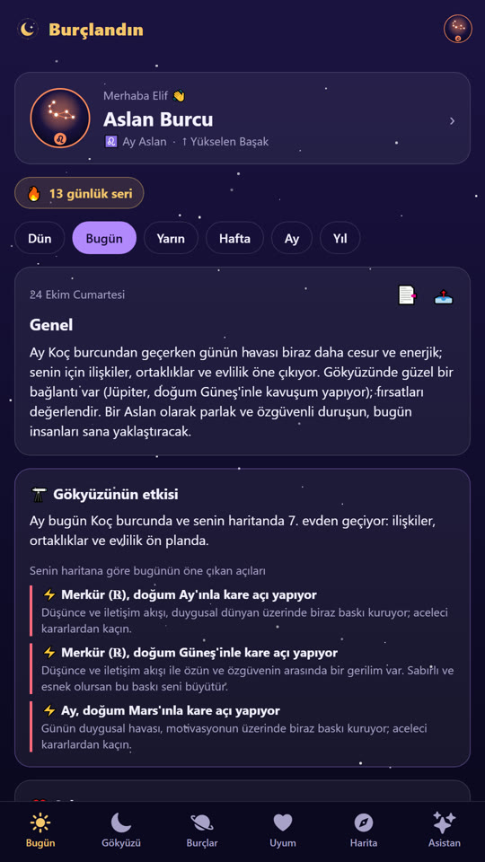
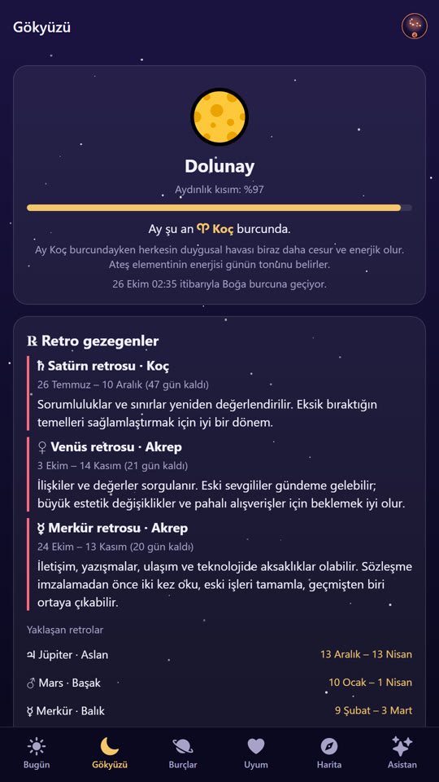
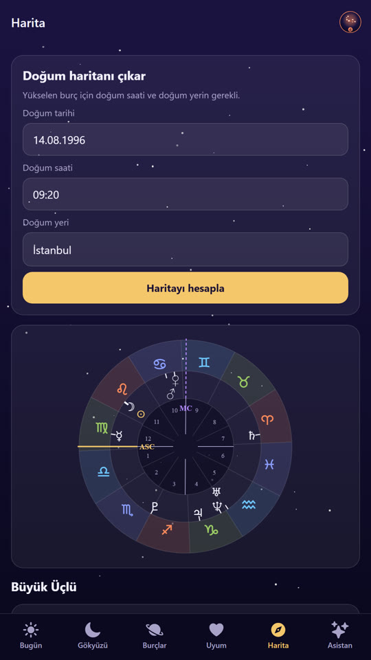
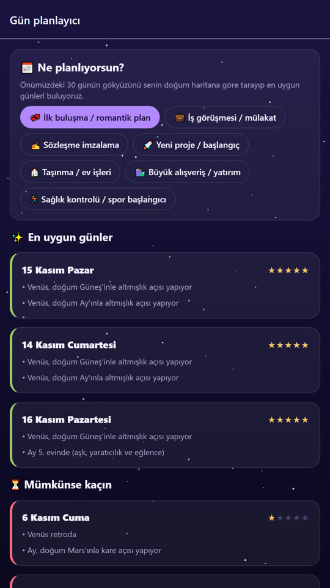
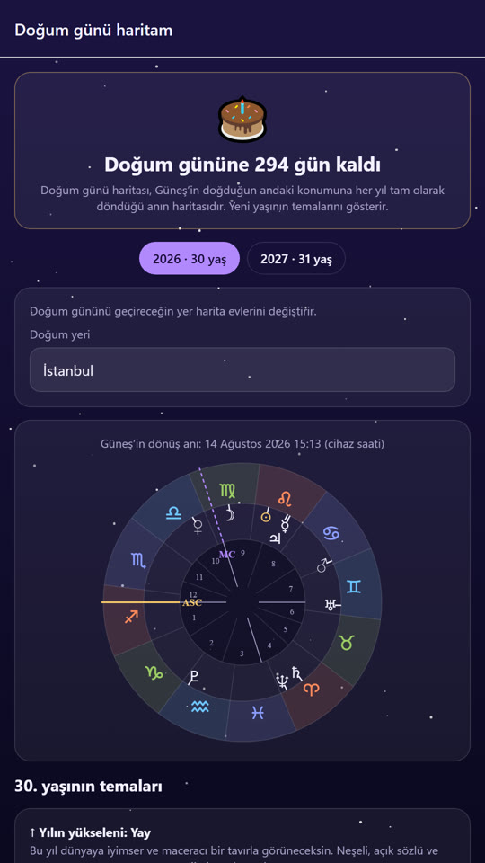
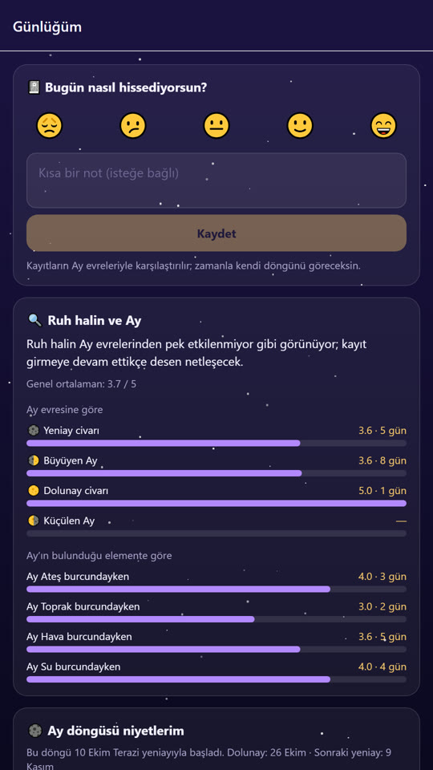

Burçlandın
Gerçek Gökyüzüyle Burç Yorumu
Yorumların, gezegenlerin bugünkü gerçek konumlarına göre seçilir. Doğum haritanı girersen her şey sana özel olur: günlük yorum, Ay evreleri, retrolar, uyum ve önemli işlerin için en uygun günler.

Tanıtım Videosu
24 saniyede Burçlandın.
Neler Var?
Tüm hesaplamalar cihazında, gerçek astronomik verilerle yapılır.
Günlük, Haftalık, Yıllık
Aşk, kariyer, sağlık ve şans puanları o günün gezegenlerinden; her yorumun gerekçesiyle.
Gökyüzü Takvimi
Ay'ın evresi ve burcu, retro gezegenler, yeniay, dolunay ve tutulmalar.
Doğum Haritası
Yükselen burç, 12 ev ve gezegenler arası açılar; doğum günü haritası.
Uyum
Burç uyumu, iki kişinin tam haritasını karşılaştıran sinastri ve günün en uyumlu arkadaşı.
Gün Planlayıcı
İlk buluşma, iş görüşmesi ya da yeni başlangıç için önümüzdeki 30 günün en uygun günleri.
Günlük ve Niyetler
Ruh halinin Ay evreleriyle ilişkisini gör; yeniayda niyet yaz, dolunayda sonucuna bak.
Ekranlar





Gizlilik
Bilgilerin yalnızca senin telefonunda kalır. Ayrıntılar için gizlilik politikasını okuyabilirsin.
Destek
Sık sorulan sorular ve iletişim.
Doğum saatimi bilmiyorum, kullanabilir miyim?
Evet. Doğum saatini boş bırakabilirsin; Güneş ve gezegen yorumların yine çalışır, yalnızca yükselen burç ve evler gösterilmez. Saatini sonradan Profil'den ekleyebilirsin.
Yorumlar nasıl hesaplanıyor?
Gezegenlerin konumları açık kaynaklı astronomy-engine kütüphanesiyle telefonunda hesaplanır. Günlük puanlar, o günün gezegenlerinin senin doğum haritana yaptığı açılara göre belirlenir ve her yorumun gerekçesi yazar.
Bilgilerim nerede saklanıyor?
Yalnızca telefonunda. Profil ve ayarlar ekranındaki “Tüm verilerimi sıfırla” ile hepsini silebilirsin; uygulamayı kaldırınca da silinir.
Bildirimleri nasıl açar ya da kapatırım?
Uygulamada sağ üstteki avatarına dokun, Profil ve ayarlar ekranındaki bildirim anahtarlarını kullan.
Bir hata buldum, nasıl bildiririm?
Uygulamada Profil → Hakkında → Hata kayıtları bölümünden raporu e-postayla gönderebilir ya da aşağıdaki adrese yazabilirsin.